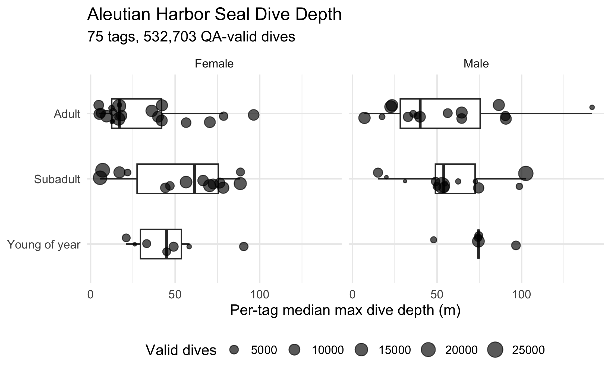

Apache Parquet & DuckDB for Marine Mammal and Fisheries Science
2026-11-23
Our datasets outgrew read.csv() and load(".RData") years ago.
Note
Goal for today (30 min): Leave ready to start an R project that writes Parquet files and queries them rapidly with DuckDB.
.rds, and .RData| Format | Pain point at scale |
|---|---|
| CSV | Slow text parsing; fragile type guessing (NAs turn numeric columns into text); must scan all rows; no nested or spatial types |
.rds / .RData |
R-only binary; must deserialize the entire object into RAM; .RData pollutes the global environment |
When you only need sex, age_class, and depth_max for QA-valid dives, reading a 286 MB CSV or .rds still pays the full I/O and memory cost.
Real NMFS Alaska biologger telemetry from akhs-aleutian-dive (75 harbor seal tags, Aleutian Islands, 2014–2017):
dive_start, dive_mid, dive_end)Stored locally in gitignored data/ three ways:
data/raw/AleutianPv_DiveData4analysis.csv (286 MB)data/raw/AleutianPv_DiveData4analysis.rds (14 MB)data/parquet/aleutian_dives.parquet (16 MB) & dive_data_parquet/ (75 deployid=.../ partitions)arrow, nanoparquet), Python (polars, pandas, pyarrow), DuckDB, Spark, and BigQueryRow-oriented formats (CSV, SQLite) store record 1, then record 2, then record 3. Parquet groups rows into chunks (row groups) and stores each column contiguously.
min/max statistics.rds vs. Parquet + DuckDBMean depth_max by sex and age_class across QA-valid dive midpoints (1.75M rows):
csv_path <- "data/raw/AleutianPv_DiveData4analysis.csv"
rds_path <- "data/raw/AleutianPv_DiveData4analysis.rds"
pq_path <- "data/parquet/aleutian_dives.parquet"
sizes_mb <- round(file.size(c(csv_path, rds_path, pq_path)) / 1024^2, 2)
summarise_dives <- function(x) {
x |>
filter(dt_type == "dive_mid", qa_status == "include") |>
summarise(mean_depth = mean(depth_max, na.rm = TRUE), .by = c(sex, age_class))
}
t_csv <- system.time(
readr::read_csv(
csv_path, col_select = c(sex, age_class, dt_type, qa_status, depth_max),
show_col_types = FALSE
) |> summarise_dives()
)[["elapsed"]]
t_rds <- system.time(readRDS(rds_path) |> summarise_dives())[["elapsed"]]
con <- dbConnect(duckdb())
t_duck <- system.time(
tbl(con, sprintf("read_parquet('%s')", pq_path)) |> summarise_dives() |> collect()
)[["elapsed"]]
dbDisconnect(con, shutdown = TRUE)| Format | Size (MB) | Query Time (s) | Cross-Language | Reads Only Needed Cols/Rows |
|---|---|---|---|---|
| CSV (readr) | 285.52 | 0.881 | Yes (untyped) | Partial (cols) |
| RDS (gzip) | 14.08 | 2.429 | No (R only) | No (full RAM) |
| Parquet (zstd) + DuckDB | 16.49 | 0.044 | Yes (typed) | Yes (cols + row groups) |
Tip
RDS shrinks the 286 MB CSV to ~14 MB, but forces R to deserialize all 1.75M rows and 23 columns into memory. Parquet + DuckDB matches that tiny footprint while scanning only 5 columns and qualifying row groups in milliseconds.
Convert a large CSV straight to Hive-partitioned Parquet out-of-core in DuckDB (or use arrow::write_parquet() / arrow::write_dataset() from an R data frame):
dbExecute(con, "
COPY (
SELECT * FROM read_csv_auto(
'data/raw/AleutianPv_DiveData4analysis.csv',
nullstr = 'NA',
types = {
'dt': 'TIMESTAMP',
'timeline_start_dt': 'TIMESTAMP',
'depth_min': 'DOUBLE', 'depth_max': 'DOUBLE',
'duration_min': 'DOUBLE', 'duration_max': 'DOUBLE'
}
)
) TO 'data/parquet/dive_data_parquet' (
FORMAT PARQUET, PARTITION_BY (deployid),
COMPRESSION ZSTD, OVERWRITE_OR_IGNORE
);
")Warning
Real-world typing gotcha: Leading location rows (Argos, capture_location) have NA for dive metrics, so CSV auto-inference can type depth_max as VARCHAR. Declaring types once locks strict DOUBLE and TIMESTAMP types into Parquet.
Biologger telemetry is hierarchical: one tag deployment (deployid) has thousands of dives. Parquet stores list-of-struct columns natively—no need to repeat tag metadata on every row:
nested_dives <- arrow::open_dataset("data/parquet/dive_data_parquet") |>
filter(
deployid %in% c("PV2014_2001_10A0193", "PV2016_3001_16A0227"),
dt_type == "dive_mid", qa_status == "include"
) |>
select(deployid, sex, age_class, tbl_identifier, dt, shape, depth_max) |>
collect() |>
slice_min(dt, n = 2, by = deployid) |>
tidyr::nest(dives = c(tbl_identifier, dt, shape, depth_max))
nested_path <- "data/parquet/aleutian_dives_nested.parquet"
arrow::write_parquet(nested_dives, nested_path)
arrow::read_parquet(nested_path) |> tidyr::unnest(dives)# A tibble: 4 × 7
deployid sex age_class tbl_identifier dt shape depth_max
<chr> <chr> <chr> <int> <dttm> <chr> <dbl>
1 PV2014_200… Fema… Adult 398191 2014-09-02 19:48:47 U 6
2 PV2014_200… Fema… Adult 398193 2014-09-02 20:02:24 Squa… 5.5
3 PV2016_300… Fema… Adult 1311457 2016-09-13 02:02:31 U 10.5
4 PV2016_300… Fema… Adult 1311459 2016-09-13 02:22:07 U 20.5Project all 75 Aleutian capture locations (173.9°E–178.7°W across the 180° antimeridian) to Alaska Albers (EPSG:3338) and store geometry + CRS in Parquet:
captures_sf <- arrow::open_dataset("data/parquet/dive_data_parquet") |>
filter(dt_type == "capture_location", !is.na(latitude), !is.na(longitude)) |>
select(deployid, sex, age_class, longitude, latitude) |>
collect() |>
st_as_sf(coords = c("longitude", "latitude"), crs = 4326) |>
st_transform(3338)
geo_path <- "data/parquet/aleutian_captures_geo.parquet"
arrow::as_arrow_table(
mutate(st_drop_geometry(captures_sf), geom = geoarrow::as_geoarrow_vctr(st_geometry(captures_sf)))
) |>
arrow::write_parquet(geo_path)
arrow::read_parquet(geo_path, as_data_frame = FALSE) |> st_as_sf() |> print(n = 3)Simple feature collection with 75 features and 3 fields
Geometry type: POINT
Dimension: XY
Bounding box: xmin: -2129047 ymin: 433502.9 xmax: -826448.9 ymax: 849646.5
Projected CRS: NAD83 / Alaska Albers
First 3 features:
deployid sex age_class geom
1 PV2014_2001_10A0193 Female Adult POINT (-1531141 474568.7)
2 PV2014_2005_R1_15A0888 Female Adult POINT (-1530998 474614.2)
3 PV2014_2003_14A0117 Female Adult POINT (-1531141 474568.7)arrow?Click any .parquet file in the File Explorer to open it directly (powered by DuckDB under the hood):
arrow vs. duckdbarrow for reading/writing Parquet, partitioned datasets, and zero-copy Arrow tablesduckdb for SQL, complex joins, window functions, and larger-than-RAM aggregationsarrow::to_duckdb() and arrow::to_arrow()| Database | Architecture | Best At | NMFS Role |
|---|---|---|---|
| SQLite | Embedded, row-oriented | App state, single-row lookups | Local configs / small apps |
| PostgreSQL | Client-server (OLTP) | Multi-user concurrent writes, auth | Authoritative lab/program DBs |
| Oracle | Enterprise server | Institutional compliance, ERP/catch data | Agency-wide source of truth |
| DuckDB | Embedded, columnar (OLAP) | Fast aggregations on Parquet & tables | Your project analytics engine |
In R, DuckDB is just a standard CRAN package (no separate system installer):
Connect to an in-memory database (stateless, ideal for querying Parquet) or a .duckdb file:
duckdb_version
1 v1.5.6Tip
Positron’s Data Connections sidebar also includes a built-in DuckDB driver to browse .duckdb tables and preview views directly in the Data Explorer.
No CREATE TABLE or import step needed—point DuckDB straight at all 75 deployment-partitioned Parquet files:
part_glob <- "data/parquet/dive_data_parquet/**/*.parquet"
dbGetQuery(con, sprintf("
SELECT
sex, age_class,
COUNT(DISTINCT deployid) AS n_tags,
COUNT(*) AS n_dives,
ROUND(MEDIAN(depth_max), 1) AS median_depth_m
FROM read_parquet('%s', hive_partitioning = true)
WHERE dt_type = 'dive_mid' AND qa_status = 'include'
GROUP BY sex, age_class
ORDER BY sex, age_class
", part_glob)) sex age_class n_tags n_dives median_depth_m
1 Female Adult 21 153845 19.5
2 Female Subadult 14 141622 48.0
3 Female Young of year 7 21820 45.0
4 Male Adult 15 108071 39.0
5 Male Subadult 13 81417 58.5
6 Male Young of year 5 25928 76.5dbplyr (Keep Your Tidyverse)Write standard tidyverse verbs—dbplyr translates them into DuckDB SQL lazily and only pulls results into R when you call collect():
dives_tbl <- tbl(
con,
sql(sprintf(
"SELECT * FROM read_parquet('%s',
hive_partitioning = true)",
part_glob
))
)
tag_summary <- dives_tbl |>
filter(
dt_type == "dive_mid",
qa_status == "include"
) |>
group_by(deployid, sex, age_class) |>
summarise(
n_dives = n(),
p95_depth_m = quantile(
depth_max, 0.95, na.rm = TRUE
),
.groups = "drop"
) |>
arrange(desc(p95_depth_m))
show_query(tag_summary)<SQL>
SELECT
deployid,
sex,
age_class,
COUNT(*) AS n_dives,
QUANTILE_CONT(depth_max, 0.95) AS p95_depth_m
FROM (
SELECT * FROM read_parquet('data/parquet/dive_data_parquet/**/*.parquet',
hive_partitioning = true)
) AS q01
WHERE (dt_type = 'dive_mid') AND (qa_status = 'include')
GROUP BY deployid, sex, age_class
ORDER BY p95_depth_m DESCggplot2Push the 532k-dive aggregation into DuckDB for per-tag medians, collect() 75 rows, and plot in ggplot2:
dives_tbl |>
filter(dt_type == "dive_mid",
qa_status == "include") |>
summarise(
med_depth = median(depth_max, na.rm = TRUE),
n_dives = n(),
.by = c(deployid, sex, age_class)
) |>
collect() |>
mutate(age_class = factor(
age_class,
c("Young of year", "Subadult", "Adult")
)) |>
ggplot(aes(med_depth, age_class)) +
geom_boxplot(outlier.shape = NA, width = 0.45) +
geom_point(
aes(size = n_dives), alpha = 0.65,
position = position_jitter(height = 0.14, seed = 4817)
) +
facet_wrap(~ sex) +
labs(
x = "Per-tag median max dive depth (m)", y = NULL,
size = "Valid dives",
title = "Aleutian Harbor Seal Dive Depth",
subtitle = "75 tags, 532,703 QA-valid dives"
) +
theme_minimal(base_size = 13) +
theme(legend.position = "bottom")
DuckDB’s spatial extension brings PostGIS-style geometry functions (ST_Point, ST_Transform, ST_Intersects) directly into SQL—querying GeoParquet files with zero database setup:
Note
Use sf + geoarrow when you need full R spatial modeling/plotting, and DuckDB spatial when filtering millions of points or running bounding-box / polygon joins before pulling results into R.
.duckdb File| Choose a Parquet Data Lake when… | Choose a .duckdb file when… |
|---|---|
| Sharing data across R, Python, Spark, or GCS | One analyst/project needs fast local joins & views |
| Appending new deployments/years as partitions | Materializing cleaned intermediate tables |
| Using Positron Data Explorer directly on files | You want views, macros, and indexes in one file |
| Archiving immutable snapshots in object storage | Working iteratively on a single-file project DB |
Tip
You can combine both: store canonical inputs as partitioned Parquet files and create lightweight views inside a project .duckdb file that query them on the fly.
Yes—as a local/cloud analytical cache, not a replacement.
targets pipelines, and models locally against DuckDB + Parquet without repeatedly taxing production DBsAs NMFS moves data to GCS (gs://...), DuckDB’s httpfs extension queries remote Parquet files via byte-range requests—pulling only needed columns and row groups:
dbExecute(con, "INSTALL httpfs; LOAD httpfs;")
# Option A: GCP Application Default Credentials (ADC) / Workload Identity
dbExecute(con, "CREATE SECRET gcs_adc (TYPE GCS, PROVIDER CREDENTIAL_CHAIN);")
# Option B: GCS interoperability HMAC / HKEY credentials (via env vars, never hardcoded)
dbExecute(con, sprintf(
"CREATE SECRET gcs_hmac (TYPE GCS, KEY_ID '%s', SECRET '%s');",
Sys.getenv("GCS_HMAC_KEY"), Sys.getenv("GCS_HMAC_SECRET")
))
gcs_uri <- "gs://nmfs-ak-telemetry/aleutian-pv/deployid=PV2016_*/*.parquet"
tbl(con, sql(sprintf(
"SELECT * FROM read_parquet('%s', hive_partitioning = true)", gcs_uri
))) |>
filter(dt_type == "dive_mid", qa_status == "include") |>
summarise(n_dives = n(), .by = c(sex, age_class)) |>
collect()data-dictParquet stores column types, not ecological meaning (e.g., that dt is UTC or what qa_status codes mean). Posit’s data-dict pairs a diffable data-dict.yaml contract with Parquet files:
name: akhs-aleutian-dive
tables:
- name: dive_data
source: { parquet: data/parquet/aleutian_dives.parquet }
columns:
- name: dt_type
type: enum
values: [dive_start, dive_mid, dive_end,
Argos, FastGPS, capture_location]
- name: qa_status
type: enum
values: [include, exclude_tooDeep, exclude_tooLong_dive]
- name: depth_max
type: number
description: Max dive depth (m); NA on location rows
constraints: ["depth_max >= 0"]targets + Parquet + DuckDB gives fast incremental builds, explicit types, zero-side-effect queries, and project-relative pathsDESCRIBE SELECT * FROM read_parquet(...)) without loading gigabytes into Rdata-dict.yaml documents units, UTC conventions, and QA codes (exclude_tooDeep, exclude_tooLong_dive) so agents stop guessingakhs-aleutian-dive/
├── R/
│ ├── 01_csv_to_parquet.R # CSV/DB -> data/parquet/
│ └── 02_query_helpers.R # DuckDB + dbplyr helpers
├── data/parquet/ # Partitioned Parquet (local or gs://)
├── data-dict.yaml # Living schema + biological metadata
├── analysis.qmd # Quarto report querying DuckDB lazily
└── _targets.R # Optional reproducible pipelineTry it this week:
.csv or .parquet in Positron’s Data ExplorerCOPY ... (FORMAT PARQUET, COMPRESSION ZSTD) or arrow::write_parquet()readRDS() / read_csv() call with tbl(con, "read_parquet(...)")Resources: arrow.apache.org · duckdb.org · data-dict.tidyverse.org · positron.posit.co
NMFS Alaska / North Pacific R User Group — Parquet & DuckDB in R